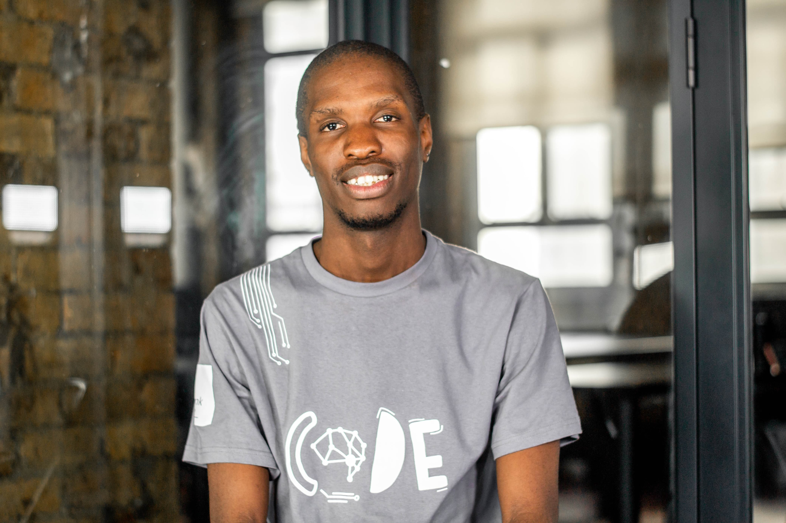

A passionate software engineer with a love for crafting seamless user experiences. I specialize in blending technology and creativity to deliver impactful solutions. When I'm not coding, you'll find me exploring new ideas and collaborating on exciting projects.
I completed my studies in software engineering, with a focus on systems development, at WeThinkCode. This intensive program provided me with a solid foundation in computer science principles, algorithms, and data structures, as well as hands-on experience in software development, problem-solving, and teamwork. At WeThinkCode, I had the opportunity to work on complex projects that allowed me to develop a strong understanding of programming languages such as Python, Flutter/Dart, and Java. The program emphasized practical application, where I worked collaboratively with peers to design, build, and maintain scalable software systems. My graduation from WeThinkCode marked a significant milestone in my career, where I gained not only technical expertise but also the critical soft skills required to excel in the tech industry. I am always eager to learn and adapt to new technologies, and I strive to apply my knowledge to create innovative, efficient solutions that address real-world challenges.
My journey in the tech world began with Webflow, where I mastered creating responsive and visually appealing websites. Over the past four years, I have expanded my expertise to include Python, Flutter/Dart, Java, and various web development technologies. I have worked as a full-stack developer, building dynamic applications and integrating payment gateways, enhancing user experiences, and creating solutions tailored to clients' needs. My experience includes designing interactive interfaces, managing backend systems, and developing cross-platform mobile applications. My focus has always been on delivering innovative and efficient solutions while continuously improving my skills and staying up-to-date with the latest industry trends. From Webflow to building complex applications, my dedication to growth and adaptability has been the cornerstone of my career.